はじめに
WebX68k は、X68000 エミュレータ px68k-libretro の wasm ビルドをブラウザ上で動かす Web プレイヤーです。
IPLROM/CGROM、および起動用の Human68k システムディスク(human302.xdf)は
あらかじめ同梱されているため、追加の準備なしにすぐ起動できます。
Introduction
WebX68k is a web player that runs a WebAssembly build of the X68000 emulator px68k-libretro in your browser.
The IPLROM/CGROM and a bootable Human68k system disk (human302.xdf)
are bundled ahead of time, so you can start right away with no setup.
起動する
ページを開くと起動オーバーレイが表示され、「ディスク無しで起動」(内蔵IPL ROMメニューから起動)
と「システムディスクで起動」(同梱の human302.xdf をFDD0へ挿入してから起動)
の2択が選べます。
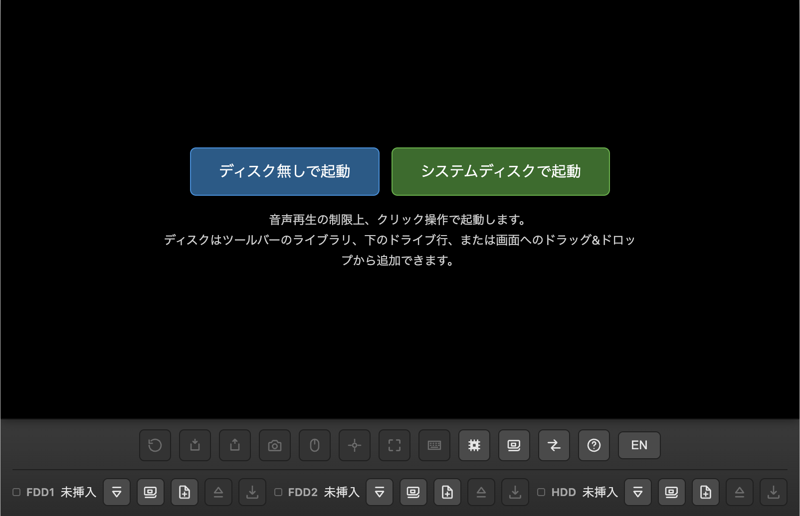
ブラウザの音声再生制限により、起動にはクリック操作が必須です。
起動前に HDD を1つでもセットしている場合(次項参照)、1つ目のボタンの文言は 「セットしたディスクで起動」に変わり、押すとそのセット済みのHDDで起動します。
URLパラメータでディスクとオーバーレイの扱いを指定することもできます。
?fd1=URL / ?fd2=URL でFDD0/FDD1へディスクイメージを、
?hdd=URL でHDDへイメージをセットした状態でページを開けます
(URLはCORSが有効なオリジンから配信されている必要があります)。同じURLに再度
アクセスした場合は再ダウンロードせず、ブラウザに保存済みのイメージ(編集内容含む)
から復帰します。?system=1 は同梱システムディスクをFDD0へ
(fd1 指定時はそちらが優先)、?run=1 はオーバーレイを
出さずそのまま自動起動します(自動再生制限により音は最初のクリック/キー入力まで
鳴りません)。指定URLがZIP/LZHアーカイブで複数枚のディスクを含む場合は、
自動起動せずディスクライブラリを開いて選んでもらう形になります。
?lib=URL(&lib=URL2 のように複数指定可)は、種別
(FD/HDD)を問わずディスクライブラリへ登録するだけの共有リンク用パラメータです。
スロットへは自動挿入せず必ずライブラリを開き、指定時は run=1 でも
自動起動しません。
?fd1= / ?fd2= / ?hdd= / ?system= の
いずれかがURLにある場合、URLが指定していないスロットは解除された状態でページが
開きます。共有リンクを開いた人が誰でも同じ状態で起動できるようにするための仕様です。
なお、SCSIハードディスクはURLパラメータでは指定できません。
SCSIディスクを挿した状態でも、上記のいずれかを含むリンクを開くとSCSIスロットは
解除されます。
AudioWorklet が必要ですが、これは
https または localhost でのみ使えます。LAN の IP アドレス(http://192.168.x.x:port/
など)で開いた場合は音声が使えないため、その場合は無音のまま起動します
(以前は起動そのものが失敗していました)。
Starting the emulator
A start overlay appears when you open the page, offering two choices:
"Start Without a Disk" (boots from the built-in IPL ROM menu) or "Start with System Disk"
(inserts the bundled human302.xdf into FDD0 before starting).
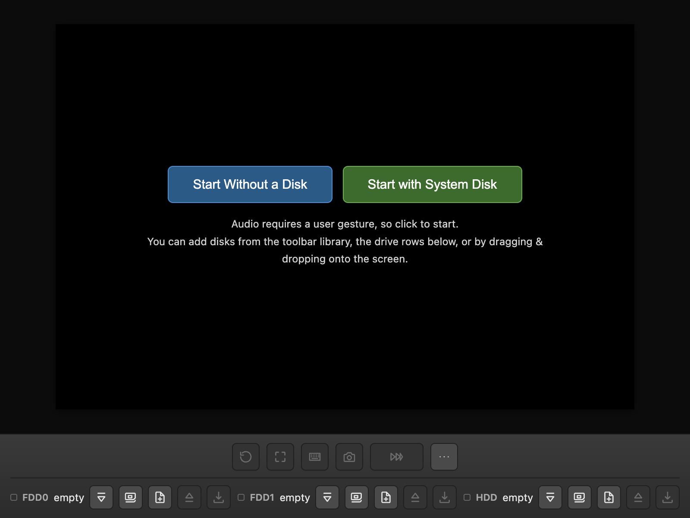
Due to browser autoplay restrictions, a click is required to start.
If a HDD is already set (see the next section), the first button's label changes to "Boot with the Selected Disks" and boots with that HDD.
URL parameters can also control disk loading and the overlay: ?fd1=URL /
?fd2=URL load a disk image into FDD0/FDD1, and ?hdd=URL sets
one into the HDD, all before the page finishes opening (the URL must be served from a
CORS-enabled origin). Revisiting the same URL doesn't re-download it — the image
already saved in the browser, including any edits, is reused. ?system=1
loads the bundled system disk into FDD0 (unless fd1 is also given, which
takes priority), and ?run=1 auto-boots without showing the overlay
(playback starts muted until the first click or key press, due to autoplay
restrictions). If the URL resolves to a ZIP/LZH archive containing multiple disks, it
won't auto-boot — the Disk Library opens instead so you can pick.
?lib=URL (repeatable, e.g. &lib=URL2) is a sharing-link
parameter that only registers images in the Disk Library, regardless of kind (FD/HDD).
It never auto-inserts into a slot — the Library always opens — and skips run=1
auto-boot whenever it's given.
When the URL carries any of ?fd1= / ?fd2= / ?hdd= /
?system=, any slot the URL doesn't mention is cleared as the page opens —
this is what makes a shared link boot into the same state for everyone who opens it.
Note that a SCSI hard disk can't be specified via URL parameters: if a
SCSI disk is inserted, opening a link with any of those parameters clears the SCSI slot
too.
AudioWorklet, which is only
available over https or localhost. Opening the page from a LAN IP address (e.g.
http://192.168.x.x:port/) means audio is unavailable, so it now
boots silently instead (it used to fail to boot at all).
画面表示（ドット等倍 / 4:3表示）
実機のX68000は、画面モードの解像度に関わらず4:3のブラウン管モニタいっぱいに 映像を映していました。WebX68k は既定ではドット等倍(コアの実解像度を そのまま正方形ピクセルで描く、Web系エミュレータで一般的な表示)ですが、 「…」→「表示」→「4:3表示」で、この実機の見え方を再現するモードへ切り替えられます。
例えば 512x512 系の画面(テキスト画面など)は横方向に、768x512 の画面は縦方向に 補正されます(実解像度がどちらへ寄っているかで補正の向きが変わります)。補正は 常に拡大方向で行うため、ドット等倍で見えていたドットが間引かれて 消えることはありません。また 4:3表示のときだけ補間(にじみ)が有効になり、 実機CRTの見え方に近づきます。
切り替えた設定はブラウザに保存され、次回訪問時も引き継がれます。
Screen display (1:1 pixels / 4:3 display)
Real X68000 hardware always filled a 4:3 CRT monitor, regardless of the resolution of the current screen mode. WebX68k defaults to 1:1 pixel display (the core's native resolution drawn with square pixels, the common look for web-based emulators), but you can switch to a mode that reproduces the real hardware's look via "…" → "Display" → "4:3 display".
For example, 512x512-family screens (such as text mode) stretch horizontally, while 768x512 screens stretch vertically — which way it corrects depends on which side the native resolution leans toward. The correction always enlarges, so dots that were visible at 1:1 are never dropped. Interpolation (a soft blur) is only enabled while 4:3 display is on, giving a look closer to a real CRT.
Your choice is saved in your browser and carries over to your next visit.
ディスクイメージを読み込む
画面下部のFDD0/FDD1/HDDそれぞれのスロット行へファイルをドラッグ&ドロップするか、 「ディスク挿入」ボタンから選択して読み込ませます。ライブラリから挿入したり、 ブランクディスクを新規作成したり、挿入中のディスクをダウンロードすることもできます。
ドロップできる場所はドライブ行以外にも2つあり、ドラッグ中は受け付け可能な場所が 枠で強調表示されます。画面領域(エミュレータ画面の上)に落とすと、 HDDイメージはHDDスロットへ(起動後でロック済みならメッセージが出ます)、FDイメージは FDD0へ(FDD0が埋まっていてFDD1が空ならFDD1へ)入ります。複数枚入りアーカイブは スロットへは入らずライブラリへ登録してライブラリを開きます。ディスク ライブラリのダイアログに落とした場合は、スロットには入れずライブラリへの 登録だけを行います(挿入先はこれから選ぶ、という文脈のため)。
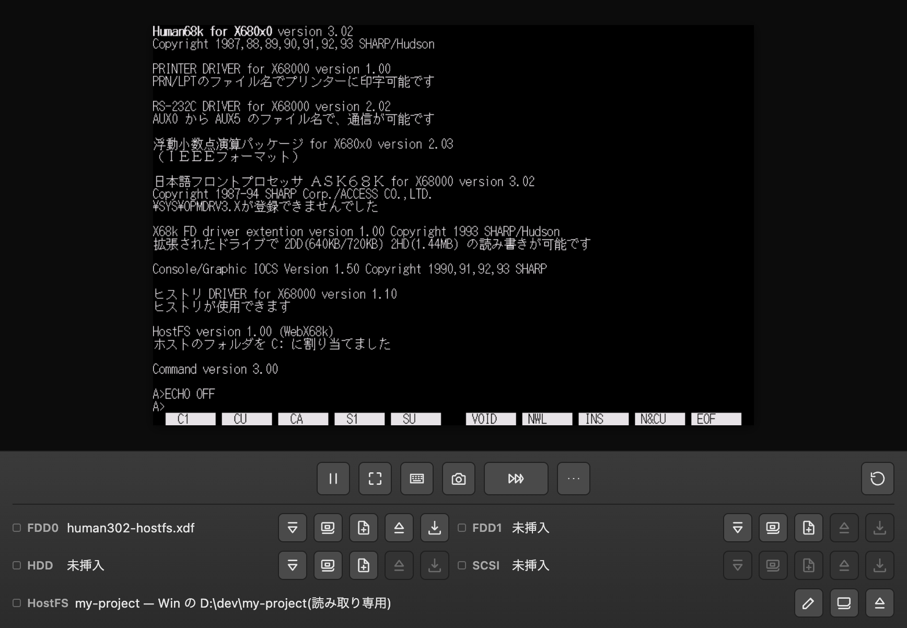
- FDD対応拡張子:
.xdf.dim.d88.hdm.img.2hd - HDD対応拡張子:
.hdf.dup
ZIP・LZHアーカイブもそのままドロップ/選択できます。 中に入っているディスクイメージだけを取り出し(readmeなどは無視)、1枚だけなら そのまま該当スロットへ入ります。複数枚入っている場合は自動では装填せず、 ディスクライブラリへフォルダとしてまとめて登録し、ライブラリを開いて選んでもらう 形になります(詳しくは次項)。対応形式はLZHが lh0/lh5/lh6/lh7、ZIPが 無圧縮(stored)およびdeflateです。
ただし、後述のファイルマネージャ(ファイル転送)でFAT編集ができるのは
.xdf .dim .hdm .img .2hd のみです。
.d88 はセクタ形式が異なるため編集非対応です。
Loading disk images
Drag & drop a file onto an FDD0/FDD1/HDD slot row at the bottom of the player, or use the "Insert Disk" button to pick one. You can also insert from the library, create a new blank disk, or download the currently inserted disk.
There are two more places you can drop a file besides a slot row; while dragging, the drop-accepting area is highlighted with a border. Dropping onto the screen area (over the emulator display) sends a HDD image to the HDD slot (a message is shown if it's already locked after boot), and a FD image to FDD0 (or FDD1 if FDD0 is occupied and FDD1 is free). An archive containing multiple images isn't inserted into a slot — it's registered to the library, which then opens. Dropping onto the Disk Library dialog only registers the file(s) into the library without inserting into any slot, since opening the library means you're about to choose a destination yourself.
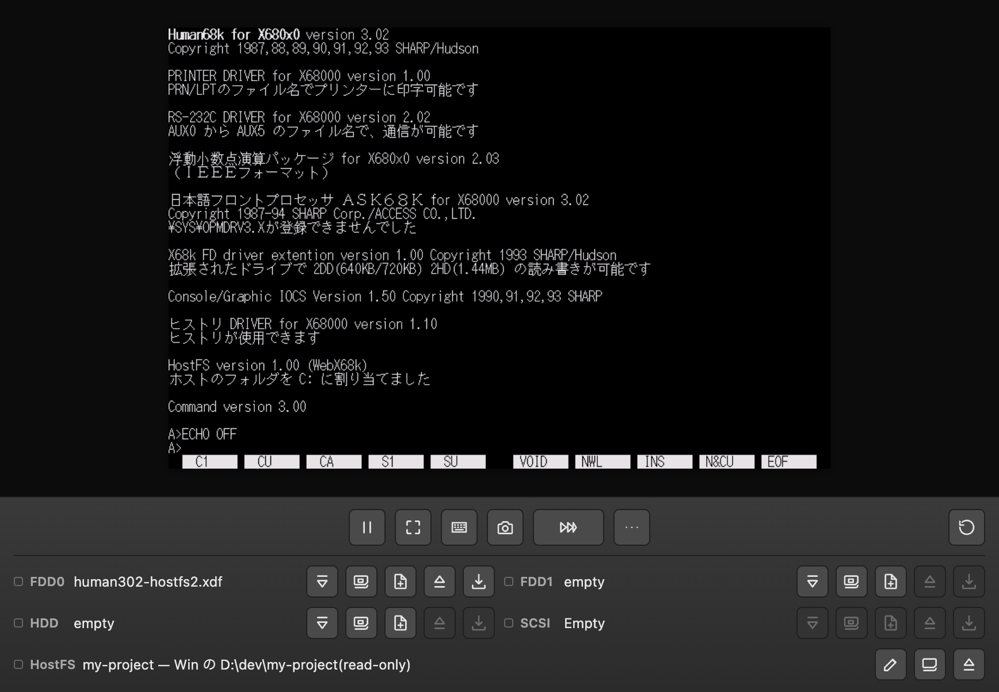
- FDD extensions:
.xdf.dim.d88.hdm.img.2hd - HDD extensions:
.hdf.dup
ZIP and LZH archives can be dropped or selected directly. Only the disk image(s) inside are extracted (readme files etc. are ignored); a single image goes straight into the target slot. If an archive contains multiple images, none of them are auto-inserted — they're registered as a folder in the Disk Library for you to pick from (see the next section for details). Supported formats: LZH lh0/lh5/lh6/ lh7, ZIP stored and deflate.
Note that the file manager (File Transfer) described below can only edit the FAT of
.xdf .dim .hdm .img .2hd images.
.d88 uses a different sector format and is not supported for editing.
ディスクライブラリ
「…」メニューの「ディスク」グループにある「ディスクライブラリ」から、これまでに挿入したディスクイメージの 一覧を開けます。ブラウザ内に保存されたイメージから、挿入するドライブ (FDD0 / FDD1 / HDD) を選んで再挿入できます。
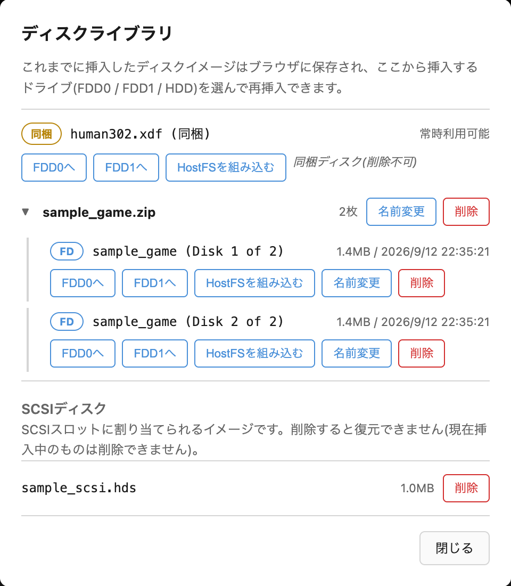
複数枚のディスクを含むZIP/LZHアーカイブを読み込んだ場合は、ここへ
フォルダとしてまとめて登録されます。フォルダを開くと中のディスク
一覧に切り替わり、FDD0 / FDD1 それぞれへ挿入できるので、2ドライブ同時装填型の
ソフトはここで続けて両方を指定できます。URLパラメータ(fd1/
fd2/hdd)経由でアーカイブを読み込んだ場合は、該当フォルダが
展開・強調表示された状態でこのダイアログが自動的に開きます。
各スロット行の「ライブラリから挿入」ボタンからも同様に挿入でき、フォルダを選ぶと
中のディスク一覧へ切り替わるので、続けて2枚目・3枚目へ差し替えられます。FDD行の
「ブランク作成」でフォーマット済みの新規イメージ(2HD 1232KB・X68000標準)を作って
ライブラリへ保存できます。
HDD行には専用の「ブランクHDDを作成」ボタンがあり、Human68k形式でパーティション
分けされたFAT16フォーマット済み40MBイメージをその場で作成してライブラリへ保存し、
そのままHDDスロットへセットします。ただしIPL(起動コード)を持たないため単体では
起動できず、FDDからHuman68kを起動してデータ用ドライブとして使う想定です
(システムディスクで起動すると C: として認識されます)。
いずれもHDDの作成・セットができるのは起動前だけです。
Disk Library
"Disk Library" in the "…" menu's Disk group opens the list of disk images you have inserted so far. Choose a drive (FDD0 / FDD1 / HDD) to re-insert an image saved in your browser.
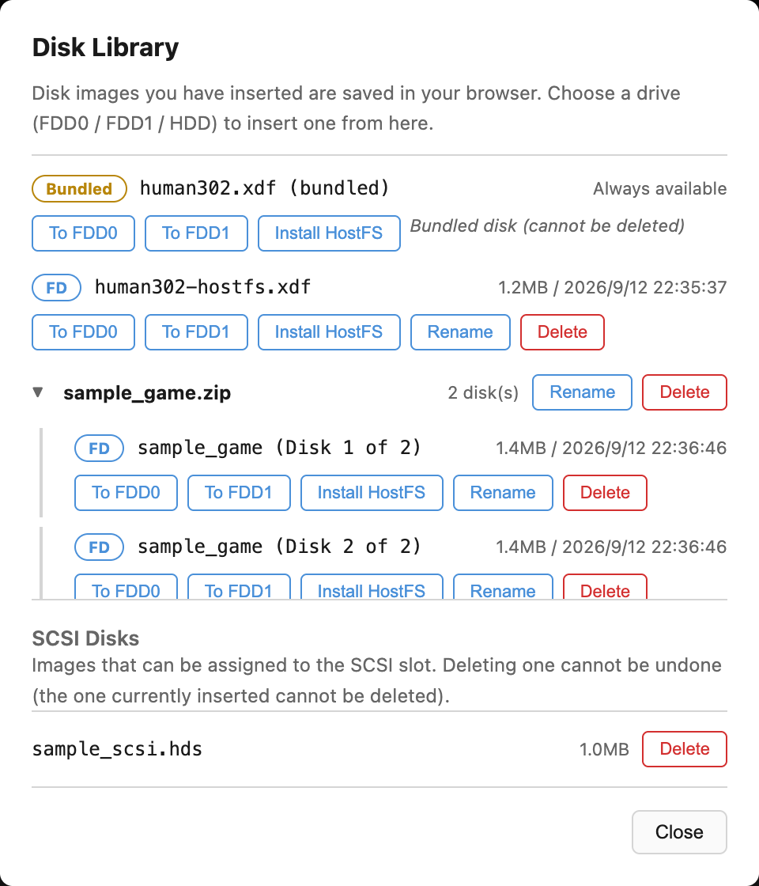
When you load a ZIP/LZH archive containing multiple disk images, it's registered here
as a folder. Opening the folder switches to the list of disks inside,
and you can insert each one into FDD0 / FDD1 — so a title that expects both drives
loaded at once can be set up here in two steps. If the archive was loaded via a URL
parameter (fd1/fd2/hdd), this dialog opens
automatically with that folder expanded and highlighted.
Each slot row's "Insert from Library" button works the same way — picking a folder
switches to the disks inside it, so you can swap in the 2nd, 3rd disk, etc. The FDD rows'
"New Blank" creates a freshly formatted image (2HD 1232KB, the X68000 standard) and
saves it to the library. The HDD row
has its own "Create blank HDD" button, which builds a Human68k-partitioned,
FAT16-formatted 40MB image on the spot, saves it to the library, and sets it into the
HDD slot right away. It carries no IPL (boot code), so it can't boot on its own — boot
Human68k from a floppy and use it as a data drive (the system disk picks it up as
C:). Creating or setting a HDD is only possible before boot.
SCSIハードディスクを使う
SCSIハードディスクは、HDD(SASI)とは別系統の専用スロットです。両方を同時に 挿した状態で使えます。画面下部のSCSIスロット行へドラッグ&ドロップするか、 挿入ボタン、または「ライブラリから挿入」から読み込ませます。
SCSIスロット行の「ブランクSCSIディスクを作成(サイズ指定・FAT16)」ボタンから、
新規イメージ(拡張子.hds)をその場で作成できます。サイズは
1〜2047MBの整数で指定します。上限が2047MBなのは、SCSIのHLE
(ハードウェアエミュレーション層)がイメージサイズを32bit符号あり整数として
扱っているためです。区画が複数あるイメージを挿入した場合、それぞれの区画は
別々のドライブとして見えます。
保存先はFD/HDDのディスクライブラリとは別で、ブラウザの
OPFS(Origin Private File System)内のscsi/に置かれます。設定
ダイアログのライブラリには「SCSIディスク」という独立した節があり、そこから
一覧・削除ができます。現在スロットに挿入中のイメージは削除できません。
ドライブ行の「ダウンロード」ボタンから、ゲストが書き込んだ後のイメージを手元の
ファイルとして取り出せます。
http://で開いた場合など保護されていない接続では、
SCSIスロットに「この環境では使えません(保護された接続が必要です)」と表示され、
機能そのものが使えません。
Using a SCSI hard disk
A SCSI hard disk uses its own slot, separate from the HDD (SASI) slot, and both can be used at the same time. Drag & drop a file onto the SCSI slot row at the bottom of the player, use its insert button, or "Insert from Library".
The SCSI slot row's "Create Blank SCSI Disk (choose size, FAT16)" button builds a new
image (extension .hds) on the spot. Size is an integer from 1 to
2047 MB; the 2047 MB ceiling comes from the SCSI HLE (high-level emulation)
handling the image size as a signed 32-bit integer. An image with multiple partitions
shows up as multiple drives.
It's stored separately from the FD/HDD disk library, in your browser's
OPFS (Origin Private File System) under scsi/. The settings dialog's
library has its own "SCSI Disks" section for listing and deleting them.
The image currently inserted in the slot can't be deleted. The
"Download" button on the drive row exports the image — including the guest's writes —
as a file on your machine.
http:// address, for example — shows "Not available in this environment
(a secure connection is required)" on the SCSI slot, and the feature is unavailable
entirely.
ファイル転送（このブラウザ⇔ディスクイメージ）
「…」メニューの「ディスク」グループにある「ファイル転送」から、2ペインのファイルマネージャダイアログを 開けます。片方が「ホスト(このPC)」、もう片方が「ディスクイメージ」です。 転送するファイルはいったんステージングしてから書き込みます。
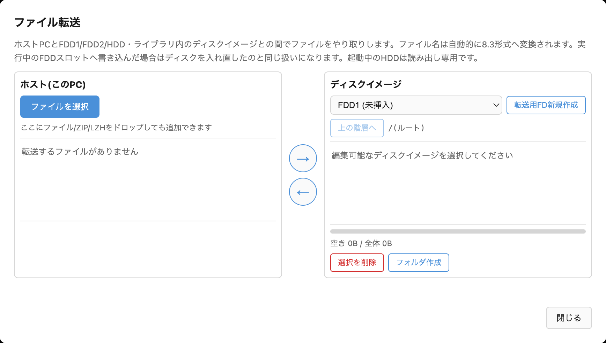
ディスクイメージへの書き込みは ASCII 8.3形式のファイル名のみ 対応しています。2バイト文字(日本語名など)や長いファイル名は書き込めません。
一方、既存の日本語ファイル名は読み取り表示のみ対応しています。 Human68kのSJISファイル名はMS-DOS予約領域と連結して格納されているため、 それらを連結してデコードして一覧表示しています。
HDDは起動前のみ編集できます。編集内容はそのままIndexedDB (ディスクライブラリ)へ保存されるため、ページを再読み込みしても残ります。 起動後はHDDの行に「起動中は変更不可」と表示され、読み取り専用になります。
File transfer (browser ⇔ disk image)
"File Transfer" in the "…" menu's Disk group opens a two-pane file manager dialog. One pane is "Host (this PC)" and the other is the disk image. Files to transfer are staged first, then written.
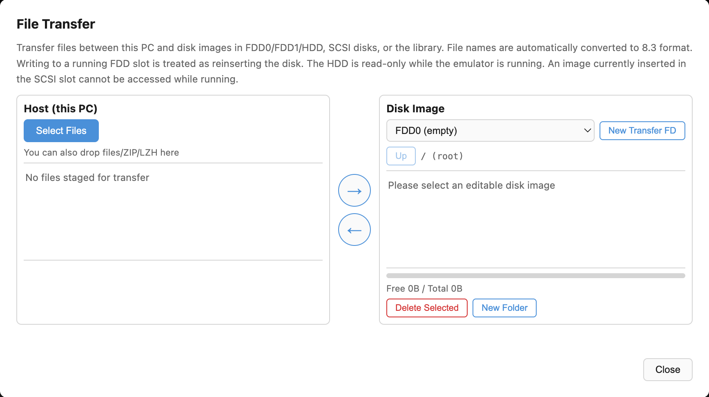
Writing to a disk image only supports ASCII 8.3-format file names. Double-byte characters (such as Japanese names) or long file names cannot be written.
Existing Japanese file names, on the other hand, are supported for read-only display. Human68k stores SJIS file names concatenated with an MS-DOS reserved area, so the viewer decodes them by joining the two parts.
The HDD can only be edited before boot. Edits are saved straight to IndexedDB (the disk library), so they survive a page reload. Once running, the HDD row shows "locked while running" and becomes read-only.
ツールバーのボタン一覧
常時表示されているのは次の5つだけです。残りはすべて「…」ボタンのメニューに まとまっています。
| ボタン | 説明 |
|---|
「…」ボタンを押すと「表示 / 入力 / ディスク / ステート」の4グループと、 グループに属さない「設定」「ヘルプ」「言語」が並びます。広い画面 (640px以上)ではグループにカーソルを合わせる(またはタップする)と右側に サブメニューが開き、親メニューは開いたままになります。狭い画面では メニューの中身がグループの中身に差し替わり、「← 戻る」で1つ上の階層へ 戻れます。
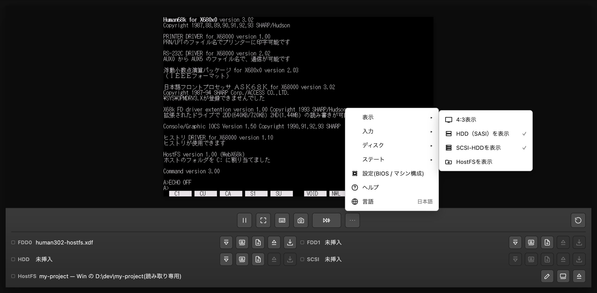
| ボタン | グループ | 説明 |
|---|
Toolbar buttons
Only these 5 buttons are always visible. Everything else lives inside the "…" button's menu.
| Button | Description |
|---|
Pressing the "…" button shows 4 groups — Display / Input / Disk / State — plus "Settings", "Help", and "Language", which sit outside any group. At wide screen widths (640px and up), hovering (or tapping) a group opens a submenu to its right while the parent menu stays open. At narrow widths, the menu's contents are replaced with the group's contents instead, with a "← Back" row to go up one level.
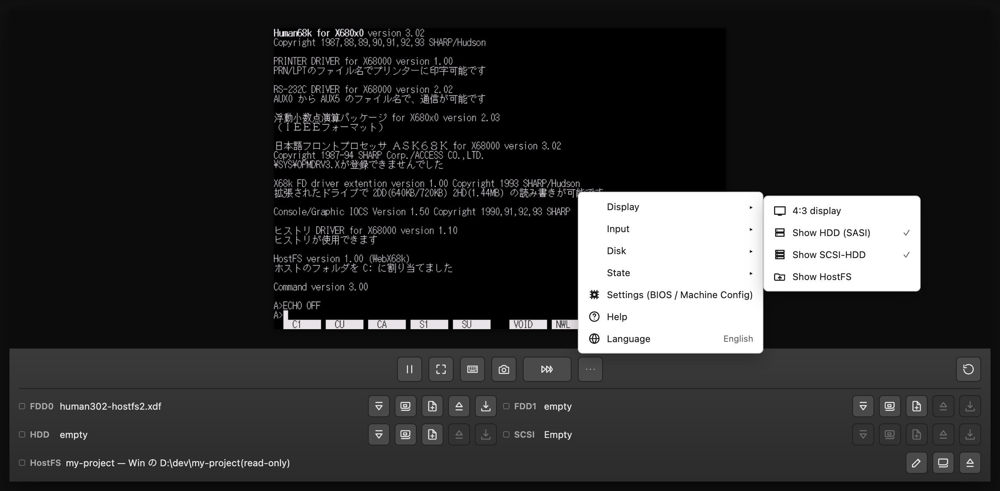
| Button | Group | Description |
|---|
キーボードとマウス
画面(canvas)にフォーカスがある状態でキーを打つと、そのままゲスト(X68000)へ
渡ります。キー判定は KeyboardEvent.code(物理的な刻印位置)ベースなので、
ホストのキーボード配列(JIS/US など)に関わらず、刻印されている位置のキーとして
動作します。
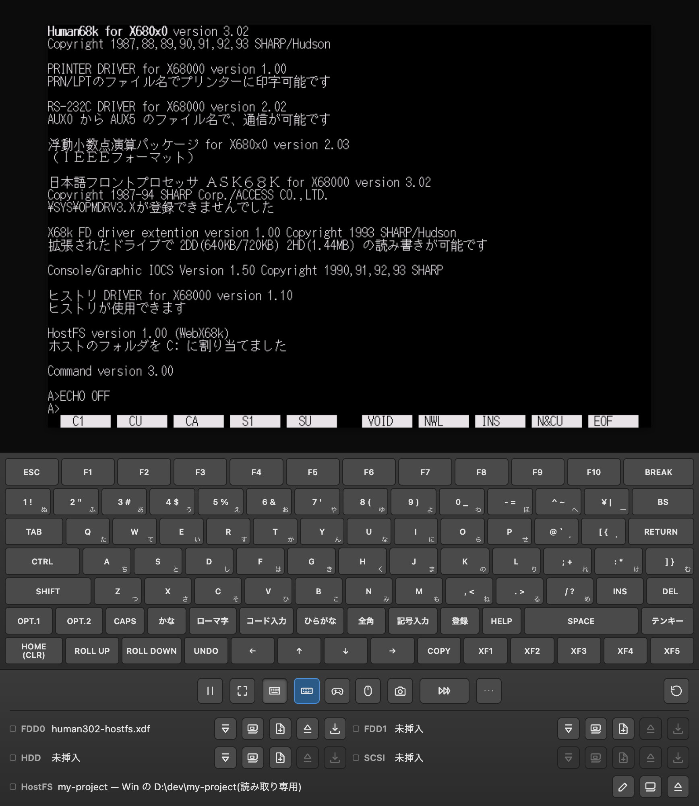
ツールバーの「仮想キーボード」ボタンを押すと、画面下に仮想キーボードが 表示/非表示されます。タッチ環境など物理キーボードを使いにくい場面向けの機能です。 修飾キーはワンショット(次の1打で自動解除。SHIFT / CTRL / OPT.1 / OPT.2)と ロック(再タップまで維持。CAPS / かな / ローマ字 / コード入力 / ひらがな / 全角)の 2種類があり、複数同時にラッチできます。PC幅(640px以上)ではキー右下に 実機キーキャップ風のかな刻印を常時併記し、スマホ幅(640px未満)では副刻印を隠す 代わりに、かなロック中だけ主刻印(英数)がかな刻印に入れ替わります。 かなロック中に SHIFT をラッチすると、さらに副刻印(ぁ ぃ っ 、 。 「 」 など)に 切り替わります。 「テンキー」キーを押すとテンキークラスタを表示/非表示できます(横幅が伸びて モバイルでは崩れやすいため既定は非表示です)。
キーを押しっぱなしにするとリピート入力されます(物理キーボード・仮想キーボード
とも対応)。リピートの開始時間・間隔はゲスト側の設定ユーティリティ
SWITCH.X の設定に従い、変更内容はブラウザ内に保存されるため
リロード後も引き継がれます。ただしキークリック音とキーボードLEDの
制御はホスト側で未対応です。またメモリ容量は
SWITCH.X で変更しても、常に設定ダイアログ(または ?ram=)側の
値が優先されます。
物理キーボード・仮想キーボード・(MCP経由の)自動操作は、それぞれ入力元ごとに 押下状態を数えており、同じキーを複数の入力元から押しても、最後の入力元が 離すまでキーは離れたとみなされません。またタブ切り替えなどで画面がフォーカスを 失った際は、押しっぱなしになったキーをすべて強制的に離すため、キーが固着する ことはありません。
マウスをキャプチャすると、以降のマウス操作がゲスト(X68000)へ渡ります。
キャプチャは画面上での右ダブルクリック、または「…」メニューの
「入力」グループにある「マウスキャプチャ」で開始できます。
(右ダブルクリックは contextmenu イベントのタイムスタンプ差分が
500ms以内かどうかで疑似判定しています。)
キャプチャの解除は Esc キー(ブラウザ標準の Pointer Lock API の機能)です。 マウスボタンの入力は、キャプチャ中のみゲストへ渡ります。
キャプチャしていないときは絶対位置追従モードで動きます。ホスト側の カーソル位置に合わせて、ゲスト側カーソルが同じ位置へ来るように移動量を送ります (X68000のマウスは相対量しか送れないため、IOCSのワークエリアから実際のカーソル 位置を読み取る閉ループになっています)。
マウスの感度設定は、ブラウザの localStorage キー
webx68k.mouseSensitivity に保存されます。
Keyboard and mouse
While the screen (canvas) has focus, keys you press are passed straight through to
the guest (X68000). Key detection is based on KeyboardEvent.code (the
physical key position), so it works the same regardless of your host keyboard
layout (JIS, US, etc.) — it maps to whatever is engraved at that position.
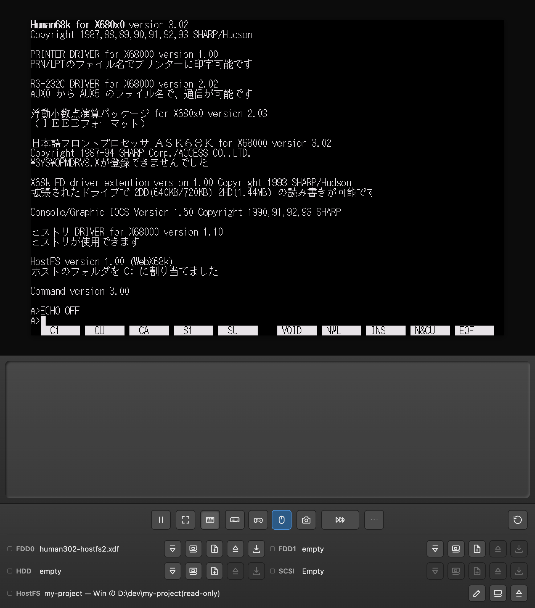
Pressing the "Virtual Keyboard" toolbar button shows/hides an on-screen keyboard at the bottom of the screen, for situations like touch devices where a physical keyboard is awkward to use. Modifier keys come in two flavors: one-shot (auto-released after the next keypress — SHIFT / CTRL / OPT.1 / OPT.2) and lock (held until tapped again — CAPS / Kana / Romaji / Code Input / Hiragana / Zenkaku), and multiple can be latched at the same time. At PC widths (640px and up), a small kana engraving is always shown in the corner of each key, like a real keycap. At phone widths (below 640px) there's no room for that, so it's hidden instead — the primary (alphanumeric) engraving swaps for the kana one only while kana lock is active. Latching SHIFT while kana lock is active swaps it again to the secondary engraving (ぁ ぃ っ 、 。 「 」 etc.). Pressing the "Ten-key" key toggles the numeric pad cluster (hidden by default since its extra width tends to break the layout on mobile).
Holding a key down repeats it (works for both the physical and virtual keyboard).
The repeat delay and interval follow the guest-side SWITCH.X
configuration utility, and changes you make there are saved in the browser, so
they persist across reloads. However, key-click sound and keyboard LED
control are not supported on the host side. Also, changing the
memory size in SWITCH.X has no lasting effect — the value from
the settings dialog (or ?ram=) always takes priority.
The physical keyboard, virtual keyboard, and automated input (e.g. via MCP) each keep their own reference count of pressed keys per input source, so pressing the same key from more than one source doesn't release it until the last source lets go. Losing focus (e.g. switching tabs) forcibly releases every held key, so keys never get stuck down.
Once the mouse is captured, subsequent mouse input is passed to the guest (X68000).
Capture starts with a right double-click on the screen, or via
"Capture Mouse" in the "…" menu's Input group.
(Right double-click is detected heuristically by checking whether the timestamp gap
between contextmenu events is within 500ms.)
Release capture with Esc (a standard feature of the browser's Pointer Lock API). Mouse button input is only passed to the guest while captured.
While not captured, the mouse runs in absolute position tracking mode: movement deltas are sent so that the guest cursor lands where your host cursor is. (The X68000 mouse can only report relative movement, so this is a closed loop that reads the actual cursor position back from the IOCS work area.)
The mouse sensitivity setting is stored under the browser's localStorage key
webx68k.mouseSensitivity.
ジョイスティックを使う（ゲームパッド対応）
USB/Bluetoothのゲームパッド(Gamepad APIのstandard mappingに準拠したもの。Xbox系コントローラーなど)を 接続すると、最大2台までポート1/2としてそのまま認識されます。方向入力はD-padと左スティックの両方に 対応しており(左スティックはデジタル量子化で読み取り、感度はデッドゾーンで調整可能)、どちらが 動いてもX68000側の方向として伝わります。
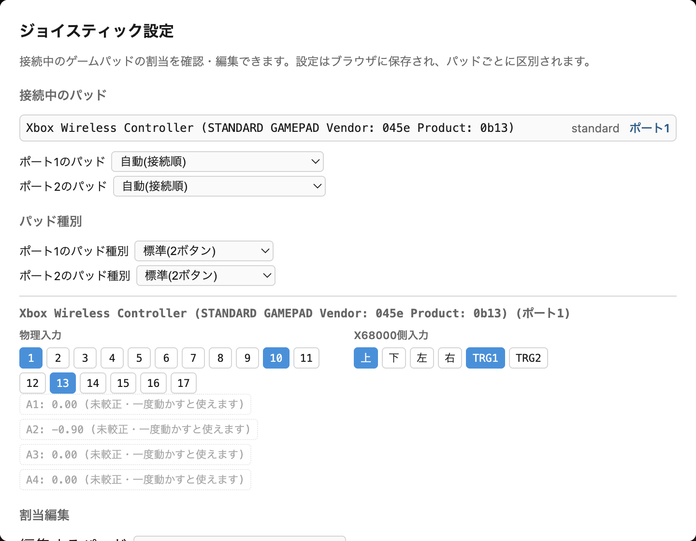
「…」メニューの「入力」グループにある「ジョイスティック設定」から設定ダイアログを開けます。接続中のパッド一覧に加え、 物理入力(ボタン/軸)の番号付きライブ表示と、そのパッドが現在送っているX68000側のライブ表示 (方向/TRGボタン)が並んでいるので、割当が実際に効いているかその場で目で確認できます。
割当編集は、[検出(置き換え)]ボタンを押してからパッドの該当ボタンを押すとその入力に置き換わる方法、 コンボボックスから選んで追加する方法(1項目に複数入力を割り当てるコンボ入力も可能)、チップの [×]で個別解除する方法があり、[XInput標準に戻す]でまとめてリセットもできます。デッドゾーンの 調整や、ポートごとに使うパッドの手動指定もここから行います。
パッド種別は「標準(2ボタン)」「CPSF-MD (8ボタン)」「CPSF-SFC (8ボタン)」から選べます。 変更はリセットボタンを押すと反映されます(リセットはコアごと再起動する ハードリセットのため、他のマシン構成の変更と同じタイミングで反映されます)。
「その他の割当」セクションでは、パッドのボタンにX68000キーボードのキーを割り当てられます。 ゲーム開始やポーズがキー操作のソフトを、パッドだけで進行させたい場合に便利です。
設定は接続したパッドの識別子(gamepad.id)ごとにブラウザへ保存されるため、抜き差し
しても各パッドの設定はそのまま残ります。
Using a joystick (gamepad support)
Connect a USB/Bluetooth gamepad that follows the Gamepad API's standard mapping (Xbox-style controllers, etc.) and it's recognized right away, up to two at once as Port 1/2. Directional input works from both the D-pad and the left stick (the left stick is read as digital, quantized input, with adjustable deadzone sensitivity); either one moving is passed through as the X68000-side direction.
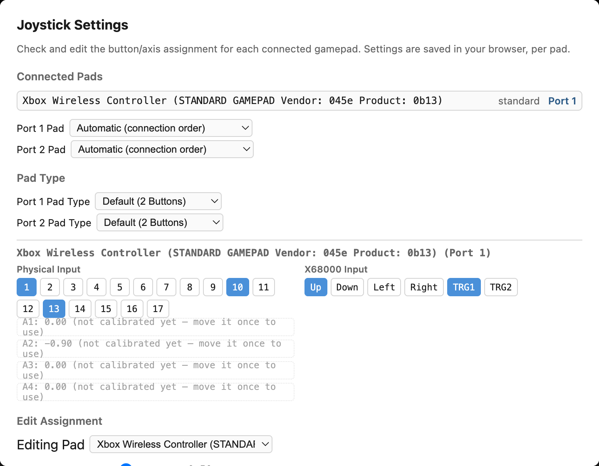
Open the settings dialog from "Joystick Settings" in the "…" menu's Input group. Alongside the list of connected pads, it shows a numbered live display of physical input (buttons/axes) and a live display of what's currently being sent to the X68000 side (directions/TRG buttons) for that pad, so you can see with your own eyes whether a binding is actually taking effect.
You can edit bindings by pressing [Detect (Replace)] and then pressing the matching button on the pad to replace that binding, by picking one from the dropdown to add it (a single target can have multiple inputs combined), or by removing one individually with a chip's [x]. [Reset to XInput Defaults] resets everything at once. Deadzone adjustment and manually pinning which pad is used for each port are also done here.
Pad type can be set to "Default (2 Buttons)", "CPSF-MD (8 Buttons)", or "CPSF-SFC (8 Buttons)". Changing it takes effect once you press Reset (Reset performs a hard reset that restarts the core, so it takes effect at the same point as other machine configuration changes).
The "Other Bindings" section lets you map a pad button to an X68000 keyboard key — handy for titles where starting the game or pausing needs a key press, so you can play with the pad alone.
Settings are saved per connected pad, keyed by its gamepad.id, so each pad keeps
its own settings even after being unplugged and reconnected.
バーチャルパッド(スマホでゲームを遊ぶ)
ツールバーの「入力パネル」ボタンを押すと、画面下に仮想キーボード・バーチャルパッド・ バーチャルトラックパッドのいずれかが表示されます(排他)。入力パネルが表示されている間は キーボード/パッド/マウスの小さなアイコンのチップが現れ、そこで表示を切り替えられます。方向入力はアナログスティック風 (固定ベース＋ノブ、8方向スナップ)で、円の端をちょんと押すだけで方向が出ます。
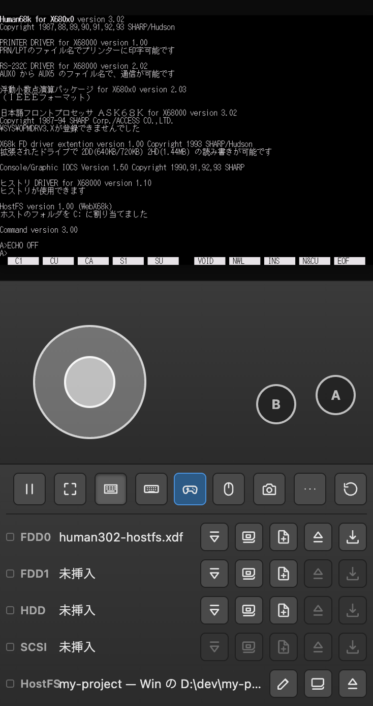
各部品が何を送るかはプロファイルとして持ちます。組み込みは ジョイスティック(2ボタン) / カーソルキー + スペース / テンキー / ジョイスティック (6ボタン)の4種類です。6ボタンは実機のメガドライブ6ボタンパッドに合わせ、上段 X/Y/Z・下段 A/B/C で右上がりに配置しています。パッドのアイコンを押すと、このプロファイル 選択メニューが開きます。
表示位置は実測値から自動で選ばれます(画面幅の決め打ちはしません)。
- パネル — 縦持ちのように画面下に余白があるとき、仮想キーボードと 同じ位置に帯として表示されます。画面は縮みません。
- 左右 — 横持ちのように画面の左右に余白があるとき、そこにスティックと ボタンが表示され、ゲスト画面に指が被りません。
- 重ねる — どちらの余白も足りないとき、画面に半透明で重ねて 表示されます。
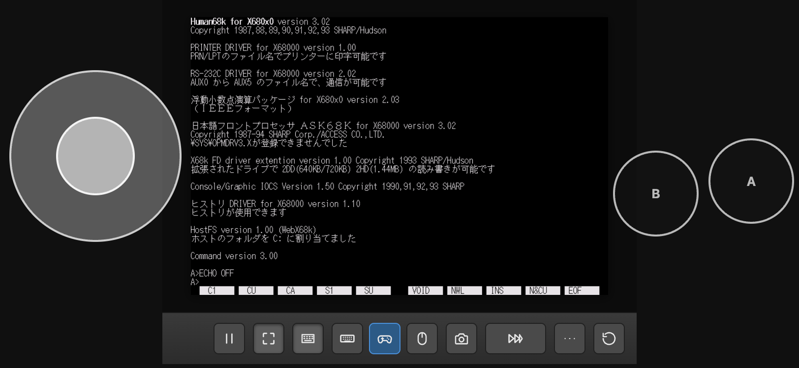
パッドのアイコンのメニュー末尾にある「割当を編集…」から、パッドの12個の入力元(スティック上下左右 / A・B・C / X・Y・Z / 補助1・2)へキーまたはジョイスティックのボタンを割り当てられます。 キー割当のピッカーは仮想キーボードと同じ配列で、割り当てると次の行へ自動で進みます。 組み込みプロファイルを編集しようとすると自動で複製が作られ、組み込み自体は 変わりません。
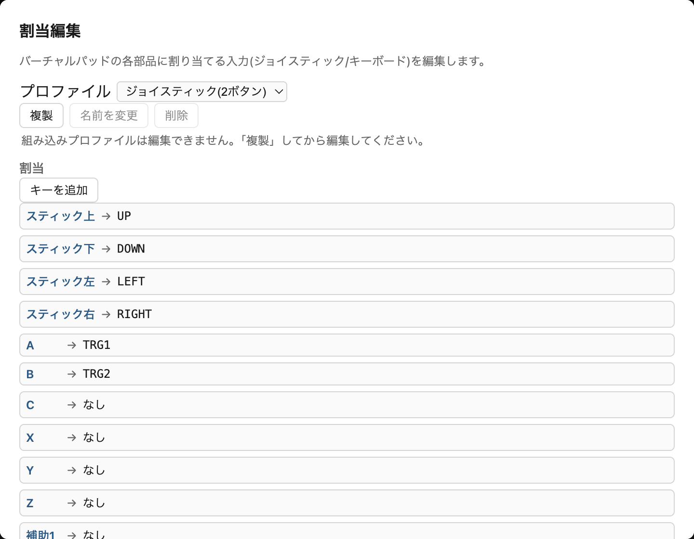
Virtual pad (playing on a phone)
Pressing the toolbar's "Input Panel" button shows the virtual keyboard, the virtual pad, or the virtual trackpad at the bottom of the screen (mutually exclusive). While a panel is shown, small keyboard/pad/mouse icon chips appear so you can switch between them. Directional input is analog-stick-style (a fixed base with a knob, snapping to 8 directions) — a light tap near the edge of the circle is enough to get a direction out.
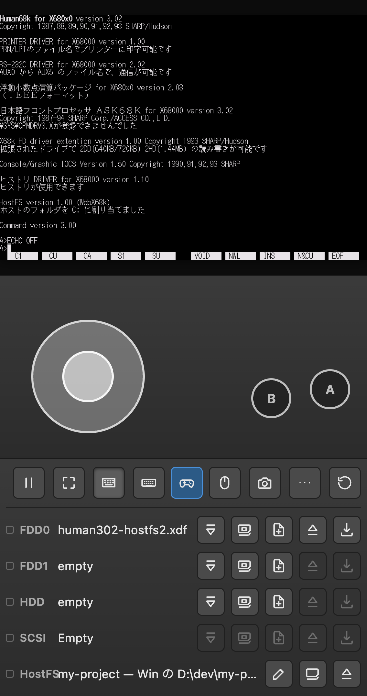
What each part sends is a profile. The built-ins are Joystick (2 Buttons) / Cursor Keys + Space / Tenkey / Joystick (6 Buttons). The 6-button layout follows a real Mega Drive 6-button pad — X/Y/Z on the top row, A/B/C on the bottom, both rising left to right. Pressing the pad chip opens this profile-select menu.
The pad's on-screen position is chosen automatically from measured layout space (never a hardcoded screen-width breakpoint):
- Panel — when there's spare room below the screen (as in portrait), shown as a docked strip in the same slot as the virtual keyboard. The screen is not shrunk.
- Sides — when there's spare room on the left/right of the screen (as in landscape), the stick and buttons go there so nothing covers the guest screen.
- Overlay — when neither kind of margin is big enough, the pad is drawn semi-transparently on top of the screen.
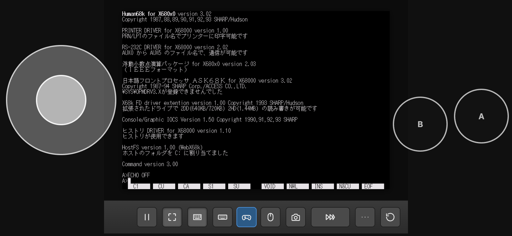
"Edit assignments…" at the end of the pad chip's menu lets you bind each of the pad's 12 input sources (stick up/down/left/right, A/B/C, X/Y/Z, Aux 1/2) to a key or a joystick button. The key picker shares the virtual keyboard's layout, and assigning a key automatically advances to the next row. Editing a built-in profile automatically creates a copy — the built-in itself is never changed.
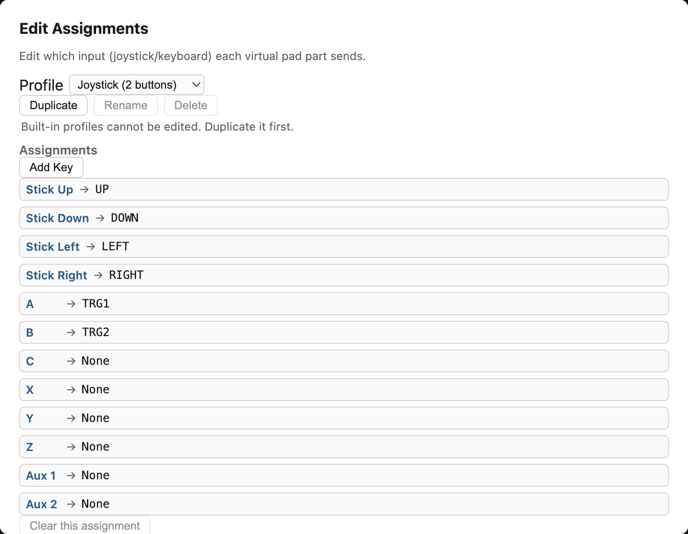
バーチャルトラックパッド(タッチでマウス操作)
iOS Safari は Pointer Lock API に対応しておらず、通常のマウスキャプチャが 成立しません。その代わりとして、入力パネルの3種類目にバーチャルトラックパッドが あります。ツールバーの「入力パネル」ボタンでパネルを開き、キーボード/パッド/マウスのチップから マウスのアイコンを選ぶと表示されます。
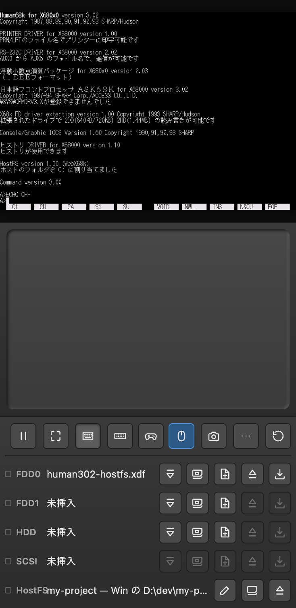
操作面は画面とツールバーの間の帯に置かれ、画面には重なりません (操作中に指がゲスト画面を隠さないようにするためです)。1本指ドラッグでカーソルを 移動します(ノートPCのトラックパッドと同じ相対移動で、マウス感度設定が適用されます)。 タップは左クリック、2本指タップは右クリック、長押し(450ms)すると左ボタンを押した ままドラッグできます。
Virtual trackpad (mouse control via touch)
iOS Safari doesn't support the Pointer Lock API, so the usual mouse-capture flow doesn't work there. As a substitute, the input panel has a third kind: the virtual trackpad. Open the input panel with the toolbar's "Input Panel" button, then pick the mouse chip from the keyboard/pad/mouse chips.
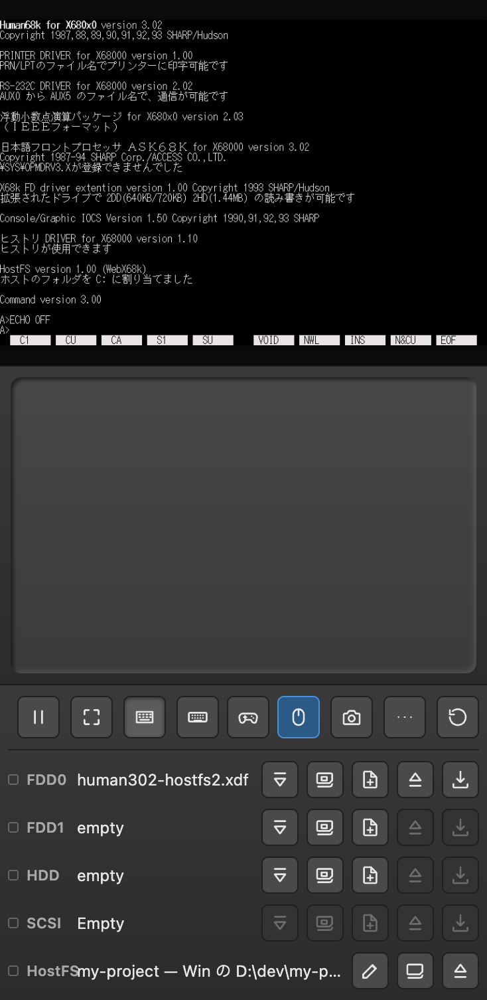
The surface sits in the strip between the screen and the toolbar and never overlaps the screen (so your finger doesn't cover the guest display while you're using it). A one-finger drag moves the cursor (relative movement, just like a laptop trackpad, with the mouse sensitivity setting applied). A tap is a left click, a two-finger tap is a right click, and a long press (450ms) holds the left button down so you can drag.
物理キーボードにジョイスティックを割り当てる
ゲームパッドを持っていない PC ユーザーが、ジョイスティック専用ソフトをキーボードで 遊べるようにする機能です。「…」メニューの「入力」グループにある「キーボード割当」 から有効にします。既定では無効で、普段の文字入力の邪魔をしません。
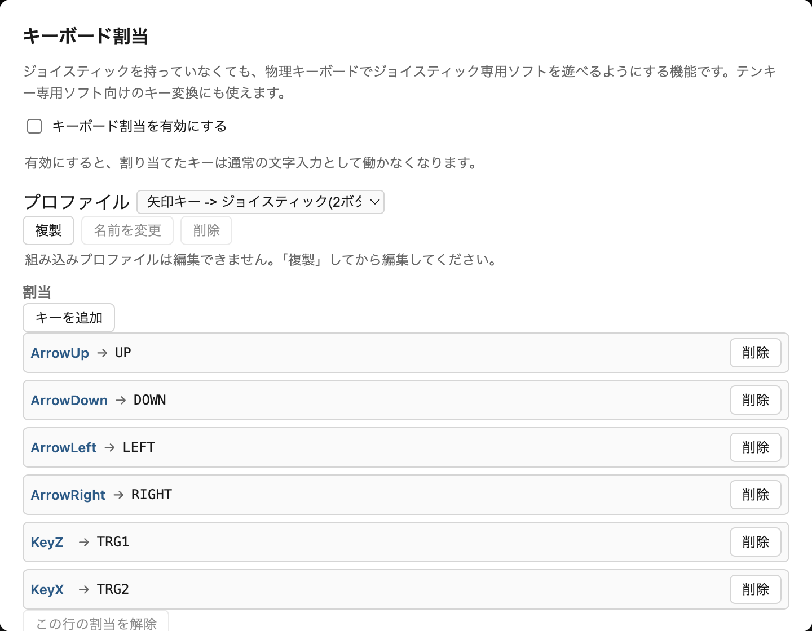
組み込みプロファイルは3種類です: 矢印キー -> ジョイスティック(2ボタン) / 矢印キー -> ジョイスティック(6ボタン)(CPSF-MD 用) / 矢印キー -> テンキー。最後のものは、 テンキーの無いノートPCでテンキー専用ソフトを遊ぶ用途にも使えます。
Mapping the physical keyboard to a joystick
For PC users without a gamepad who want to play joystick-only software, a physical key can be mapped to a joystick input. Enable it from "Keyboard Assignment" in the "…" menu's Input group. It is disabled by default, so it never gets in the way of normal typing.
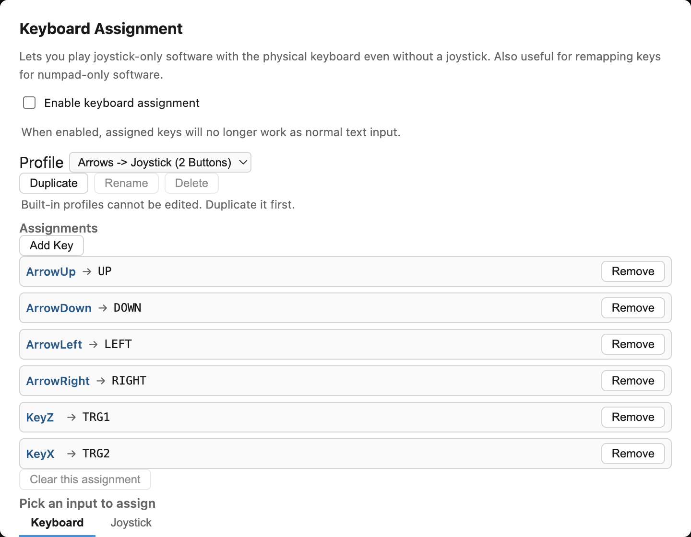
Three built-in profiles are included: Arrows -> Joystick (2 Buttons), Arrows -> Joystick (6 Buttons) (for CPSF-MD-style software), and Arrows -> Numpad — the last one also doubles as a way to play numpad-only software on a laptop with no numpad.
ステート保存と続きから
「…」メニューの「ステート」グループにある「ステート保存」「ステート復元」で、実行状態をIndexedDBへ gzip圧縮して保存・復元できます。
保存時には、そのときのディスク構成(FDD0/FDD1/HDDに何が挿入されていたか)も 一緒に記録されます。復元時に現在のディスク構成と異なる場合は確認ダイアログが 表示され、キャンセルすれば復元を中止できます。
Saving state and resuming
Use "Save State" and "Load State" in the "…" menu's State group to save/restore the running state to/from IndexedDB, gzip-compressed.
The disk configuration at save time (what was inserted in FDD0/FDD1/HDD) is recorded alongside the state. If it differs from the current configuration at load time, a confirmation dialog appears; canceling it aborts the restore.
ディスクの保存と、データが消える条件
ゲーム内セーブなど、ゲスト(X68000側)がディスクへ書き込んだ内容は、 自動的にディスクライブラリへ保存されます。ディスクへの書き込みを 検出したあと、アクセスが落ち着いたタイミングで書き戻す仕組みです(HDDは容量が 大きいため間隔を空けます)。ディスクの取り出し時、マシン構成の変更時、 タブを離れたときにも保存されるので、次にそのディスクを挿せば続きから遊べます。
保存先はサーバーではなくブラウザ内のストレージ(IndexedDB)です。 これは Cookie と同じ扱いで、次のような場合にまとめて消えます。
- ブラウザの「Cookie と他のサイトデータ」を削除したとき(「キャッシュされた画像とファイル」だけの削除では消えません)
- 「閲覧履歴データの削除」でサイトデータにチェックが入っていたとき
- シークレット/プライベートウィンドウを閉じたとき
- 端末の空き容量が不足し、ブラウザが自動で整理したとき
- Safari で7日間このサイトを開かなかったとき(WebKit の仕様で、スクリプトから書き込めるストレージが一括削除されます)
How disks are saved, and when the data disappears
Anything the guest (the X68000 side) writes to a disk — in-game save data, for example — is saved to the disk library automatically. Once a write is detected, the image is written back as soon as disk activity settles down (the HDD is saved less often because of its size). Saving also happens when you eject a disk, change the machine configuration, or leave the tab, so inserting that disk again picks up where you left off.
This is stored in your browser's storage (IndexedDB), not on a server. It behaves just like cookies, and it all disappears when:
- You clear "Cookies and other site data" (clearing only "Cached images and files" does not remove it)
- You clear browsing data with site data included
- You close a private/incognito window
- The device runs low on space and the browser reclaims storage
- You don't open this site in Safari for seven days (WebKit deletes all script-writable storage)
BIOS / マシン構成の設定
実機から吸い出した iplrom.dat / cgrom.dat をお持ちの場合、
「…」メニューの「設定」からアップロードできます。アップロードした
ファイルはIndexedDBに保存され、同梱のROMより優先して使用されます。
cgrom はパブリックドメインの東雲フォントから自作生成した
ものであり、実機のCGROMとは字形が異なります。
マシン構成として、CPU速度(10 / 16 / 25 / 33(OC) / 66(OC) / 100(OC) MHz、 および「∞MHz(ホスト次第)」「∞MHz(描画を捨てて最速)」)と RAM容量(1〜12MB)も設定できます。CPU速度はリセット不要で即時反映されます。 「∞MHz」は端末が実時間に追いつける範囲で最大のクロックへ自動調整するモードで、 落ち着く先は端末の性能とそのときの負荷で変わります。「∞MHz(描画を捨てて最速)」は 画面の更新を約30fpsへ間引いて、浮いた時間をコア実行へ回す一段上のモードです (実測で 53〜61MHz → 75〜84MHz)。ベンチマークなど比較できる数字が要る場合は 固定クロックを選んでください。
BIOS / machine configuration
If you have iplrom.dat / cgrom.dat dumped from real
hardware, you can upload them from "Settings" in the "…" menu. Uploaded files
are saved to IndexedDB and take priority over the bundled ROMs.
cgrom is generated from the public-domain Shinonome font
and its glyphs differ from the real hardware's CGROM.
You can also configure CPU speed (10 / 16 / 25 / 33(OC) / 66(OC) / 100(OC) MHz, plus "∞MHz (host-dependent)" and "∞MHz (max speed, coarse display)") and RAM size (1–12MB) as part of the machine configuration. CPU speed applies immediately, with no reset. "∞MHz" keeps the clock as high as the device can sustain in real time, so where it settles depends on the device and its current load. "∞MHz (max speed, coarse display)" goes one step further: it throttles the display to about 30fps and spends the freed time on emulation (measured: 53-61MHz to 75-84MHz). Pick a fixed clock when you need comparable benchmark numbers.
シリアルポートを使う(RS-232C)
「…」メニューの「設定」を開き、いちばん下の「シリアルポート」から接続します。 接続ボタンを押すとブラウザがシリアルポートの選択を求めるので、使うポートを選んでください。
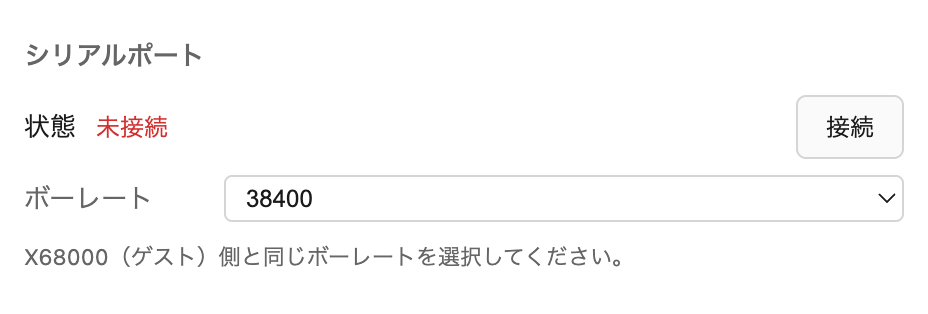
ボーレートは接続先の機器と同じ値に合わせてください。X68000(ゲスト)側の設定と 食い違っている場合は警告が表示されます。
docs/WEB_SERIAL.ja.md を参照してください。
Using the serial port (RS-232C)
Open "Settings" from the "…" menu and connect from the "Serial Port" section at the very bottom. Pressing the connect button prompts the browser to choose a serial port; pick the one you want to use.
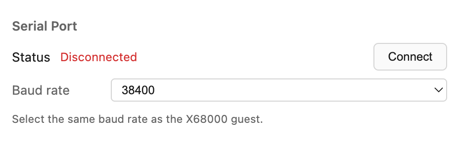
Set the baud rate to match the connected device. A warning appears if it doesn't match the X68000 (guest) side's setting.
docs/WEB_SERIAL.md for detailed steps and OS-specific notes.
ホーム画面に追加する(iPhone)
iPhone では Web ページからブラウザの URL バーを消す手段がありません。WebX68k を ホーム画面に追加し、そこから起動すると URL バーの無い状態で使えます(共有メニューの 「ホーム画面に追加」から)。Android は「フルスクリーン」ボタンのネイティブ全画面で 既に URL バーを消せます。
Add to Home Screen (iPhone)
On iPhone, there is no way for a web page to hide the browser's URL bar. Adding WebX68k to the Home Screen (via the share menu's "Add to Home Screen") and launching it from there runs it without the URL bar. On Android, the "Fullscreen" button's native fullscreen already hides it.
AIから操作する（MCP連携）
WebX68k は ?bridge=1 (または特定ポートを使う場合は
?bridge=<ポート番号>、既定ポートは3099) を付けて開くと、
ローカルのWebSocketブリッジ経由でAIエージェントから操作できます。
セットアップ手順の詳細は
mcp/README.md
を参照してください。
Controlling WebX68k from AI agents (MCP)
Open WebX68k with ?bridge=1 (or ?bridge=<port> to use
a specific port; the default port is 3099) to have it connect to a local WebSocket
bridge that AI agents can drive.
See
mcp/README.md
for full setup instructions.
トラブルシューティング
- 音が遅れる/出ない — ブラウザの制限により、起動には最初のクリック操作が必要です。
- マウスが反応しない — マウスをキャプチャしていない可能性があります。画面を右ダブルクリックするか、「…」メニューの「入力」グループにある「マウスキャプチャ」を押してください。カーソルの追従がずれた場合は同じグループの「マウス再同期」で直せます。
- ディスクが認識されない — 拡張子を確認してください(FDDは
.xdf,.dim,.d88,.hdm,.img,.2hd、HDDは.hdf,.dup)。 - ステート復元でおかしくなる — 保存時とディスク構成が異なる旨の確認ダイアログが出た場合、キャンセルすれば復元を中止できます。
- SCSIを挿したのにC:などのドライブが現れない — 起動ディスクの構成によっては、SCSIドライバを登録する場所が確保できず、SCSIドライブが認識されないことがあります。その場合でも起動そのものは妨げられません。ドライブが必要な場合は、別の起動ディスク(同梱のシステムディスクなど)で試してください。
Troubleshooting
- Audio is delayed or missing — Due to browser restrictions, starting requires an initial click.
- The mouse doesn't respond — The mouse may not be captured. Right double-click the screen, or use "Capture Mouse" in the "…" menu's Input group. If the cursor drifts out of sync, use "Resync Mouse" in the same group.
- A disk isn't recognized — Check the file extension (FDD:
.xdf,.dim,.d88,.hdm,.img,.2hd; HDD:.hdf,.dup). - Loading a state causes odd behavior — If a confirmation dialog about a disk configuration mismatch appears, canceling it aborts the load.
- Drives like C: don't appear even though a SCSI disk is inserted — Depending on the boot disk's configuration, there may be no room to register a SCSI driver, so the SCSI drive won't be recognized. This doesn't prevent booting itself. If you need the drive, try a different boot disk (such as the bundled system disk).